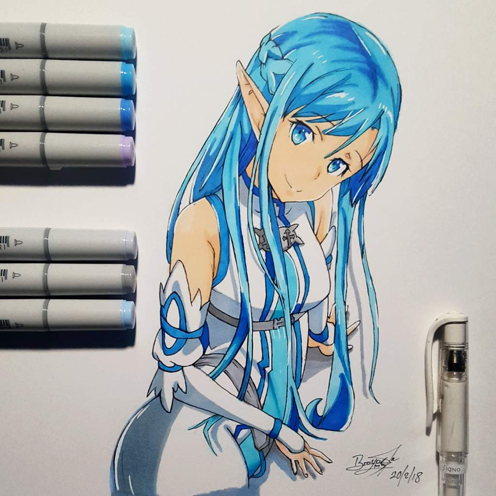

| La técnica de marcadores a base de alcohol consiste en el uso de marcadores cuyos pigmentos están disueltos en alcohol en lugar de agua, lo que permite que la tinta se seque rápidamente y se adhiera de manera uniforme a la superficie. Los marcadores a base de alcohol son muy apreciados por los artistas debido a su capacidad para crear colores intensos, mezclas suaves y transiciones sin líneas visibles. Al secarse rápidamente, evitan que el papel se deforme o que la tinta se corra. |
 |
-
Ventajas
- ☆ Los marcadores a base de alcohol están disponibles en una amplia variedad de tonos y matices.
- ☆ La tinta permite trabajar con varias capas de color sin que se disuelva la capa anterior.
- ☆ Una vez secos, los colores no se disuelven con agua, haciendo que la obra sea más duradera.
- ☆ A diferencia de las técnicas a base de agua, la tinta de alcohol no humedece el papel, evitando deformaciones.
|